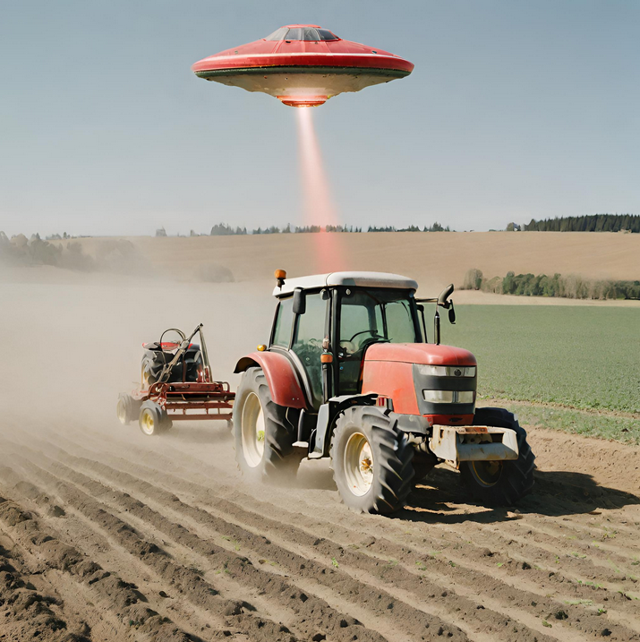

<main>
  <div class="container">
    <section>
      <a routerLink="/article" routerLinkActive="active">
        <article>
        <h2>Abuela vs. Ciberdelincuentes: una batalla épica en la campiña</h2>
        <div class="article">
          
          <p>
            En un pequeño pueblo de la campiña española, una abuela octogenaria
            se ha convertido en la inesperada heroína en la lucha contra el
            cibercrimen. Doña Carmen, conocida por sus habilidades culinarias y
            su sabiduría popular, se ha convertido en la némesis de un grupo de
            ciberdelincuentes que operaban desde la comodidad de sus hogares.
          </p>
        </div>
      </article>
    </a>
      <hr />
      <article>
        <h2>Un ovni abduce a un tractor en plena siembra</h2>
        <div class="article">
          
          <p>
            Un insólito suceso ha conmocionado a la comunidad rural de Mieres,
            en Asturias. Un tractor que se encontraba en plena faena de siembra
            fue misteriosamente elevado por un objeto volador no identificado
            (OVNI) y transportado a un lugar desconocido.
          </p>
        </div>
      </article>
      <hr />
      <article>
        <h2>El granjero Paco descubre que su vaca es una cantante de ópera</h2>
        <div class="article">
          
          <p>
            Todo comenzó una mañana soleada, mientras Paco ordeñaba a sus vacas.
            De pronto, una de ellas, Margarita, comenzó a emitir unos sonidos
            extraños. Al principio, Paco pensó que se trataba de un simple
            mugido, pero al prestar más atención, se dio cuenta de que Margarita
            estaba cantando.
          </p>
        </div>
      </article>
    </section>
  </div>
</main>
